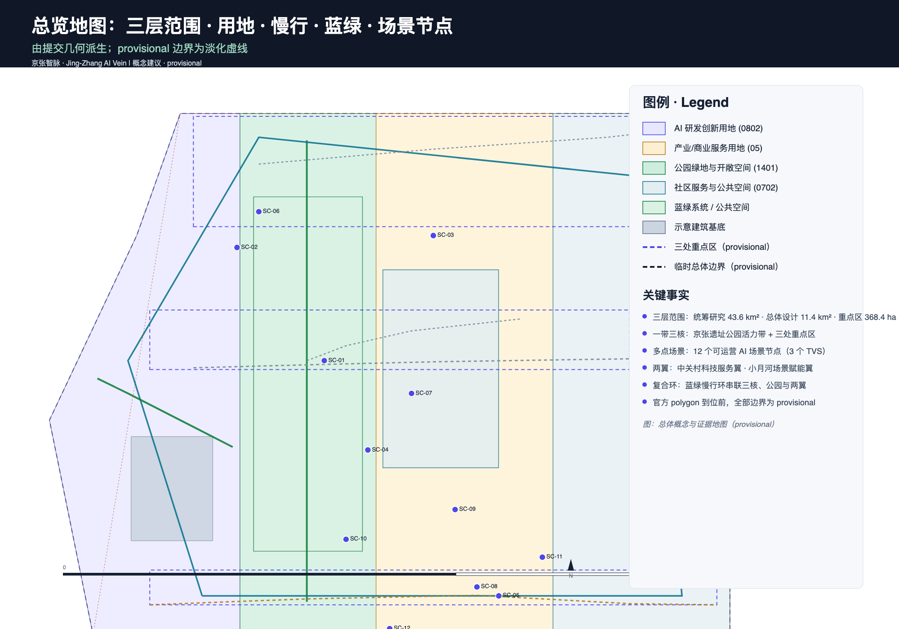

统筹研究范围
面向 43.6 km² 提出 AI 产业生态、三区两翼协同、未来城市形态与命名/VI 体系。
- 策源—孵化—加速—集聚—赋能—传播
- 六类全球案例与八类机制
- 品牌命名与传播
离线电子展示成果。本方案以「京张智脉」为核心概念，以京张遗址公园为历史与公共空间主轴，构建「一带三核、多点场景、蓝绿慢行复合环」的空间组织；权威数据仍以 GeoJSON、metrics.json、矩阵与自检结果为准。所有空间建议均为概念建议，边界为临时粗略边界。
总览地图将用地分区、交通慢行、蓝绿公共空间、建筑与更新项目、AI 场景节点放在同一张由提交几何派生的证据图中；provisional 边界以淡化虚线表达，不作为正式红线。

方案按统筹研究、总体设计、重点区域三层递进，把产业判断、城市更新与重点片区设计绑定到图层与指标。
面向 43.6 km² 提出 AI 产业生态、三区两翼协同、未来城市形态与命名/VI 体系。
面向 11.4 km² 组织城市更新、用地结构、交通市政、遗址公园活力带与风貌。
面向 368.4 公顷三处重点片区开展详细设计（provisional）。
三处重点区（provisional）给出产业定位、空间原型、AI 场景与实施依赖；矩形只表达相对关系。
花园型全栈自主创新街区；门户进入「产业展示前庭—红队沙盒—共享测试花园—清河低碳界面」，南北绿道为主脉、东西骑行支路连接测试场/治理馆/算力驿站；节点 SC-02/03/06，对应 JZ-02/JZ-05。
192.1 ha · provisional
近校型成果转化与人才社区；「原点发布厅—成果转化街—人才服务客厅—社区共享院」日常序列，慢行横廊缝合校区邻接界面；节点 SC-01/07/09，对应 JZ-03/JZ-06。
104.3 ha · provisional
城市型智能经济与国际交往街区；「四象限步行厅—数据要素会客厅—国际路演客厅—公园活动界面」昼夜序列；节点 SC-05/08/10，对应 JZ-04/JZ-06。
72.0 ha · provisional
四类用地分区完整覆盖提交边界，面积由提交几何复算。
约 267.5 公顷 · 23.4%
约 258.9 公顷 · 22.7%
约 336.6 公顷 · 29.5%
约 278.3 公顷 · 24.4%
绿道主轴、复合慢行环、缝合横廊与轨道接驳为设计示意，非道路红线。
遗址公园活力带与清河、小月河蓝绿界面构成连续系统；比例由提交几何复算。
green_ratio 0.123423 · public_space_ratio 0.073281
示意建筑基底与六个更新项目；权属与现状底数到位前拆改留仅为方法。
BLDG-001 · 约 31.1 公顷
公共空间/交通
遗址公园慢行断点缝合；依赖道路红线复核。
蓝绿/产业展示
众智园清河创新界面；依赖河道蓝线与防洪条件。
更新/产业服务
原点社区近校成果转化街；依赖权属与首层业态。
轨道/慢行
大钟寺站四象限步行连通；依赖站点与市政管线。
新基建/公共服务
AI 公共服务与端侧算力节点；依赖能源与安全条件。
运营/品牌
全球AI活动周公共路线；依赖公共空间许可与活动安全。
12 张场景卡，其中 3 张为 AI 产业测试验证场景（TVS）；每卡说明数据来源、隐私最小化、人工复核与运营责任。
发布、代码墙、小型路演；开源元数据 + 人工审核
模型红队测试与安全评测；受控测试集、专家复核、失败关闭
共享端侧算力与能源展示；任务级日志
可解释导视、低侵入传感；不采集个体轨迹
路演、洽谈、媒体发布；活动聚合数据
低碳展示、雨洪、骑行；公开环境数据
孵化、法务、投融资、展示；授权科研信息
数据要素合规流通演示；最小必要、可审计、违规下架
医疗/教育/法律/生活 AI+ 服务；人工复核
可步行、可传播体验路线；活动安全预案
限定路段接驳测试；安全员+远程人工接管
设施维护、活动安全预警；仅聚合统计、指令人工确认
SC-02、SC-08、SC-11 三个 TVS 在正文、图板与视觉页可见完整链条：persona / 触发 / 空间节点、前台后台、输入输出与合法来源、最小采集、人工复核、失败关闭、投诉申诉、运营责任、试点门槛、步骤、退出条件和可验证指标；银发、无障碍与不使用智能终端者可经人工窗口、电话或纸质表单获得等价服务。
研发、孵化、测试、转化、规模化、传播六阶段与三核两翼、公共节点、八类机制和运营角色建立可追踪关系；每个箭头落到责任角色与可核查输出。未来科学城、怀柔科学城、经开区、京津冀仅为建议协同方向，不是已签约节点。
| 阶段 | 三核/两翼与公共节点 | 主要机制 | 运营角色与可核查输出 |
|---|---|---|---|
| 研发 | AI 原点社区、高校邻接界面、中关村科技服务翼 | 人才、算力、空间 | 高校/科研团队+技术服务平台；授权成果条目、开源发布记录 |
| 孵化 | 原点成果转化街、原点发布厅 | 空间、资金、人才 | 孵化运营方+法务/投融资服务；入驻评审、服务工单 |
| 测试 | 众智园共享测试场、SC-02 沙盒、小月河场景翼 | 算力、数据、场景 | 测试运营方+专家组；测试计划、审计日志、关闭记录 |
| 转化 | 中关村科技服务翼、原点转化街、大钟寺路演客厅 | 产业、资金、数据 | 转化平台+专业服务机构；对接记录、合规复核 |
| 规模化 | 大钟寺产业聚集区、众智园复合载体、外部协同方向 | 土地、产业、空间 | 片区运营方+企业；准入评审、空间需求与分期清单 |
| 传播 | 京张遗址公园公共路线、三处地标、全球 AI 活动周 | 场景、人才、公共空间 | 公共空间/活动运营方；活动记录、投诉闭环、复盘指标 |
三个 AI 朝圣地标与「从铁轨到代码」融合叙事链。
文化源头圣地：京张铁路历史起点，文保范围内仅做保守文化标识。
自主创新圣地：全栈自主创新展示馆与红队沙盒。
AI 新文化圣地：国际路演客厅与数据要素剧场。
叙事链「从铁轨到代码」：京张铁路的工程自主（1905–1909）→ 中关村的科技自主 → AI 新文化的智能自主；导视采用站牌式双语系统与「钢轨+芯片」符号。
年度活动体系、开发者社区、场景开放、公共体验路线与国际传播转化路径。
四季十二主题 + 年度全球AI活动周；子 IP：开发者日、场景开放日、国际路演季、京张文化季。
开源贡献墙、荣誉矩阵、夜间协作空间、积分徽章（门槛透明）；社区运营方+物业。
沙盒准入制、TVS 开放规则、人工复核与失败关闭；正式开放前完成安全评估。
朝圣路线、小月河路径、全球AI活动周路线；以公共空间许可与活动安全为前提。
双语内容与国际路演；转化路径：开发者→创业→企业、企业→产业集聚、人才→安居。
以上活动与运营安排均为提议，不构成政府承诺；角色、门槛与复盘指标见 proposal.md 与 A3 文册。
known 指标由提交几何复算；unknown 指标标注原因与重算触发条件。HTML 数值与 metrics.json 一致，data-value 保留原始精确值。
compliance_matrix.json 覆盖公告 1.3/1.4/1.5 与 agent.1–agent.6 共 23 条必答任务；standard_matrix.json 与 design_depth_matrix.json 承担专业标准与成果深度证据链。
| 任务 | 内容 | 证据 |
|---|---|---|
| agent.1 | 一带总体概念与功能统筹 | 命名/VI、三大定位、五大功能、三区两翼协同回路、总体空间结构。 |
| agent.2 | AI全栈自主创新与世界级生态 | 六例全球案例、生态图谱、产业-空间映射、八类机制。 |
| agent.3 | AI+场景赋能新范式 | 12 张场景卡（3 张 TVS）、6 类画像、场景-空间-运营矩阵。 |
| agent.4 | AI公共空间与朝圣地标 | 遗址公园公共空间、智能原生新业态、3 个朝圣地标、组件库。 |
| agent.5 | 文化与叙事设计 | 京张—中关村—AI 融合叙事、导视符号、国际传播文案。 |
| agent.6 | 活动体系与长期运营 | 年度活动、品牌/IP、社区运营、场景开放、转化路径。 |
四门自动检查记录于 self_check.json；provisional 边界保留精度警示但不阻断内容评分。
| 检查 | 说明 | 结果 |
|---|---|---|
| deterministic validation | 确定性校验（含双语门禁） | PASS |
| spatial review | 空间复算（EPSG:4548） | PASS |
| visual packaging | 视觉打包与指标一致性 | PASS |
| professional evidence | 专业证据链 | PASS |
四门检查结果记录于 self_check.json；provisional 边界保留精度警示但不阻断内容评分。
完整来源、许可与使用限制见 sources.json；本页为离线静态 HTML，无 CDN、远程地图、外部脚本或字体。
九类数据缺口逐项登记为独立假设（含影响、允许用途、禁止结论与重算触发条件），见 assumptions.json。